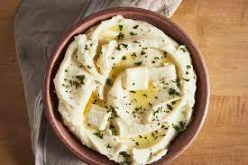

Mashed Potato

Description
Mashed potato or mashed potatoes (American, Canadian and Australian English), colloquially known as mash (British English), is a dish made by mashing boiled or steamed potatoes, usually with added milk, butter, salt and pepper. It is generally served as a side dish to meat or vegetables.
Ingredients
- Potatoes
- Garlic
- Butter
- Milk
- Cream Cheese
- Fine sea salt
- Toppings(optional)
Steps
- Cut the potatoes. Again, feel free to peel your potatoes or leave the skins on. (I always leave them on for the extra nutrients and flavor.) Then cut your potatoes into evenly-sized chunks, about an inch or so thick. Then transfer them to a large stockpot full of cold water until all of the potatoes are cut and ready to go.
- Boil the potatoes. Once all of your potatoes are cut, be sure that there is enough cold water in the pan so that the water line sits about 1 inch above the potatoes. Add the garlic and 1 tablespoon salt to the water. Then turn on high heat until the water comes to a boil. And boil the potatoes for about 10-12 minutes until a knife inserted in the middle of a potato goes in with almost no resistance. Carefully drain out all of the water.
- Prepare your melted butter mixture. Meanwhile, as the potatoes are boiling, heat your butter, milk and an additional 2 teaspoons of sea salt together either in a small saucepan or in the microwave until the butter is just melted. (You want to avoid boiling the milk.) Set aside until ready to use.
- Pan-dry the potatoes. Return the potatoes to the hot stockpot, and then place the stockpot back on the hot burner, turning the heat down to low. Using two oven mitts, carefully hold the handles on the stockpot and shake it gently on the burner for about 1 minute to help cook off some of the remaining steam within the potatoes. Then remove the stockpot entirely from the heat.
- Mash the potatoes. Using your preferred kind of masher (see above), mash the potatoes to your desired consistency.
- Stir everything together. Then pour half of the melted butter mixture over the potatoes, and fold it in with a wooden spoon or spatula until potatoes have soaked up the liquid. Repeat with the remaining butter. And then again with the cream cheese. Fold each addition in until just combined to avoid overmixing, or else you will end up with gummy potatoes.
- Taste and season. One final time, adding in extra salt (plus black pepper, if you would like) to taste.